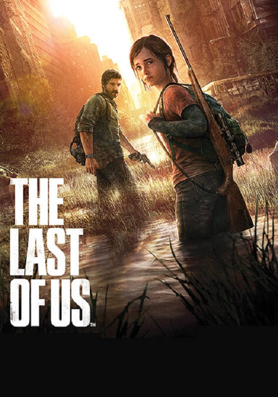

Last of Us (официальное локализованное название — «Одни из нас» с англ. — «Последние из нас») — компьютерная игра в жанре action-adventure с элементами survival horror и стелс-экшена, разработанная студией Naughty Dog и изданная Sony Computer Entertainment. Игра была выпущена в 2013 году эксклюзивно для консоли PlayStation 3. В 2014 году была выпущена обновлённая версия игры для PlayStation 4 — The Last of Us Remastered. Ремейк оригинальной игры, получивший название Last of Us Part I, вышел 2 сентября 2022 года для PlayStation 5, а 28 марта 2023 года — для Windows.
Действие игры происходит в постапокалиптическом будущем на территории бывших Соединённых Штатов Америки спустя двадцать лет после глобальной пандемии, вызванной опасно мутировавшим грибком кордицепс. Сюжет посвящён путешествию главных героев — контрабандиста Джоэла и девочки-подростка Элли, сыгранных Троем Бейкером и Эшли Джонсон с помощью технологии захвата движения. Креативным директором и сценаристом выступил Нил Дракманн. Музыка к игре написана композитором Густаво Сантаолальей.
Студия Naughty Dog работала над The Last of Us с 2009 года в обстановке секретности; разрабатываемая игра должна была быть анонсирована только на выставке Electronic Entertainment Expo в 2011 году, а до этого момента сохраняться в тайне[24]. Поскольку в это же время студия занималась ещё одним крупномасштабным проектом, Uncharted 3: Drake's Deception, руководители Naughty Dog Эван Уэллс и Кристоф Балестра приняли решение разделить студию на две команды, которые могли бы полностью посвятить себя разработке Uncharted 3 и The Last of Us соответственно. Разработкой игры руководил Брюс Стрэли, ранее выполнявший ту же роль в разработке Uncharted 2: Among Thieves; для работы над игрой к Naughty Dog также присоединился дизайнер Марк Ричард Дэвис, ранее участвовавший в работе над игрой Enslaved: Odyssey to the West.По словам сценариста и творческого продюсера игры Нила Дракманна, после завершения работ над Uncharted 2: Among Thieves Naughty Dog обдумывала возможность перезапуска серии Jak and Daxter. Первоначальная команда разработчиков собиралась именно для этого проекта, в дальнейшем вылившегося в разработку The Last of Us. В ходе обсуждений разработчики пришли к выводу, что их задумки уходят слишком далеко в сторону от классического облика Jak and Daxter. Руководитель студии дал добро на разработку новой игры по совершенно новой идее. The Last of Us разрабатывалась в обстановке, свободной от жесткой иерархии. Так, представители различных специальностей объединялись в группы для решения конкретных задач, а возникающие в процессе вопросы решались открыто. Поддерживалась открытость в критике, так как это, по словам разработчиков, ускоряло процесс создания игры.